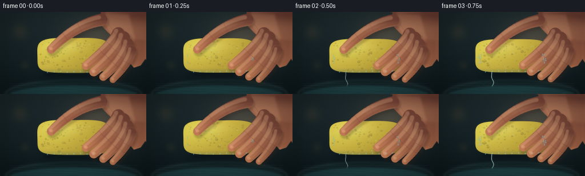
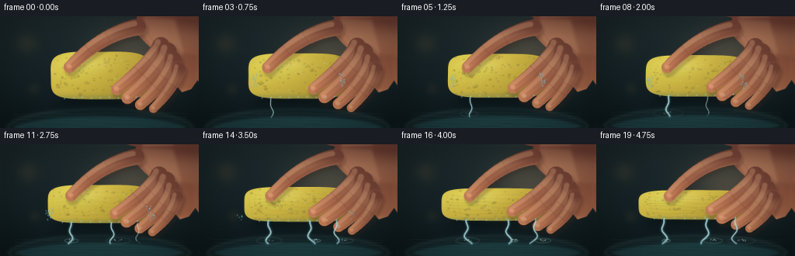

CODING AGENTS AS PIXEL WORLD MODELS
traex/DeepSeek-V4.1-Flash · phygen_011
点击播放 · 原生 RGB 像素
此结果可播放，但该运行尚未通过最终提交审核。页面展示不代表评测通过。
逐轮保存的候选
回放视频、检查图与代码变化。
每份候选均可单独播放。实际图片检查记录在下方工具轨迹中。
候选 01播放与检查图
点击播放 · 原生 RGB 像素


展开代码变化
--- 上一保存版本
+++ 本次保存版本
@@ -0,0 +1,634 @@
+"""Procedural RGB render of a hand forcefully squeezing a water-filled sponge."""
+
+from pathlib import Path
+
+import cv2
+import numpy as np
+
+import artifact_io
+
+
+W, H, N, FPS = 256, 144, 20, 4.0
+SS = 4
+RW, RH = W * SS, H * SS
+RNG = np.random.default_rng(11011)
+
+
+def pt(x, y):
+ return int(round(x * SS)), int(round(y * SS))
+
+
+def smoothstep(a, b, x):
+ t = np.clip((x - a) / (b - a), 0.0, 1.0)
+ return t * t * (3.0 - 2.0 * t)
+
+
+def blur(mask, sigma):
+ return cv2.GaussianBlur(mask.astype(np.float32), (0, 0), sigma * SS)
+
+
+def composite(canvas, color, mask, opacity=1.0):
+ m = np.clip(mask, 0.0, 1.0)[..., None] * opacity
+ canvas[:] = canvas * (1.0 - m) + np.asarray(color, np.float32) * m
+
+
+def poly_mask(points, softness=0.0):
+ mask = np.zeros((RH, RW), np.float32)
+ poly = np.asarray([pt(x, y) for x, y in points], np.int32)
+ cv2.fillPoly(mask, [poly], 1.0, lineType=cv2.LINE_AA)
+ return blur(mask, softness) if softness else mask
+
+
+def capsule_mask(points, radii, softness=0.0):
+ mask = np.zeros((RH, RW), np.float32)
+ for (x, y), radius in zip(points, radii):
+ cv2.circle(mask, pt(x, y), max(1, int(radius * SS)), 1.0, -1, cv2.LINE_AA)
+ for (x0, y0), (x1, y1), r0, r1 in zip(
+ points[:-1], points[1:], radii[:-1], radii[1:]
+ ):
+ count = max(3, int(np.hypot(x1 - x0, y1 - y0) * 2))
+ for k in range(count + 1):
+ u = k / count
+ x = x0 * (1.0 - u) + x1 * u
+ y = y0 * (1.0 - u) + y1 * u
+ radius = r0 * (1.0 - u) + r1 * u
+ cv2.circle(mask, pt(x, y), max(1, int(radius * SS)), 1.0, -1, cv2.LINE_AA)
+ return blur(mask, softness) if softness else mask
+
+
+def quadratic_points(p0, p1, p2, count=18):
+ u = np.linspace(0.0, 1.0, count)
+ x = (1 - u) ** 2 * p0[0] + 2 * (1 - u) * u * p1[0] + u**2 * p2[0]
+ y = (1 - u) ** 2 * p0[1] + 2 * (1 - u) * u * p1[1] + u**2 * p2[1]
+ return list(zip(x.tolist(), y.tolist()))
+
+
+def draw_polyline(canvas, points, color, width, alpha=1.0, softness=0.0):
+ mask = np.zeros((RH, RW), np.float32)
+ p = np.asarray([pt(x, y) for x, y in points], np.int32)
+ cv2.polylines(mask, [p], False, 1.0, max(1, int(width * SS)), cv2.LINE_AA)
+ if softness:
+ mask = blur(mask, softness)
+ composite(canvas, color, mask, alpha)
+
+
+def background(time):
+ yy, xx = np.mgrid[0:RH, 0:RW].astype(np.float32)
+ x = xx / SS
+ y = yy / SS
+ v = np.clip(y / H, 0.0, 1.0)
+ top = np.array([31, 45, 48], np.float32)
+ bottom = np.array([14, 27, 31], np.float32)
+ canvas = top * (1.0 - v[..., None]) + bottom * v[..., None]
+
+ # Soft warm practical light behind the hand.
+ glow = np.exp(
+ -(((x - 174) / 78.0) ** 2 + ((y - 52) / 58.0) ** 2) * 2.2
+ ).astype(np.float32)
+ canvas += glow[..., None] * np.array([52, 36, 22], np.float32)
+
+ # Defocused sink bowl and water surface.
+ sink = np.zeros((RH, RW), np.float32)
+ cv2.ellipse(
+ sink,
+ pt(128, 148),
+ pt(126, 30),
+ 0,
+ 0,
+ 360,
+ 1.0,
+ -1,
+ cv2.LINE_AA,
+ )
+ sink = blur(sink, 2.2)
+ composite(canvas, [23, 43, 46], sink, 0.80)
+
+ rim = np.zeros((RH, RW), np.float32)
+ cv2.ellipse(
+ rim,
+ pt(128, 146),
+ pt(121, 26),
+ 0,
+ 186,
+ 355,
+ 1.0,
+ max(1, int(1.3 * SS)),
+ cv2.LINE_AA,
+ )
+ composite(canvas, [99, 126, 116], blur(rim, 1.4), 0.20)
+
+ water = np.zeros((RH, RW), np.float32)
+ cv2.ellipse(
+ water,
+ pt(128, 151),
+ pt(120, 21),
+ 0,
+ 0,
+ 360,
+ 1.0,
+ -1,
+ cv2.LINE_AA,
+ )
+ water = blur(water, 1.2)
+ composite(canvas, [32, 69, 73], water, 0.82)
+ for j in range(5):
+ yline = 126 + j * 4.0
+ phase = time * 0.7 + j * 1.8
+ wave = [
+ (x, yline + 0.8 * np.sin(x * 0.08 + phase))
+ for x in np.linspace(15, 241, 48)
+ ]
+ draw_polyline(canvas, wave, [111, 153, 145], 0.55, 0.08)
+
+ # Gentle bokeh shapes keep the background photographic rather than flat.
+ for cx, cy, radius, color, alpha in [
+ (33, 34, 12, [188, 145, 75], 0.13),
+ (232, 25, 16, [65, 131, 137], 0.12),
+ (213, 91, 9, [150, 173, 143], 0.09),
+ (42, 94, 7, [204, 150, 82], 0.08),
+ ]:
+ m = np.zeros((RH, RW), np.float32)
+ cv2.circle(m, pt(cx, cy), int(radius * SS), 1.0, -1, cv2.LINE_AA)
+ composite(canvas, color, blur(m, radius * 0.55), alpha)
+ return canvas
+
+
+def sponge_geometry(force):
+ cx = 128.0 + 1.2 * np.sin(force * 5.0)
+ cy = 76.0 + 2.3 * force
+ half_w = 63.5 + 11.5 * force
+ half_h = 32.5 - 12.7 * force
+ return cx, cy, half_w, half_h
+
+
+def draw_sponge(canvas, force, time):
+ cx, cy, hw, hh = sponge_geometry(force)
+ yy, xx = np.mgrid[0:RH, 0:RW].astype(np.float32)
+ x = xx / SS
+ y = yy / SS
+
+ # Cast shadow, with a tighter contact shadow where the sponge meets the sink.
+ shadow = np.zeros((RH, RW), np.float32)
+ cv2.ellipse(
+ shadow,
+ pt(cx + 5, cy + hh + 8),
+ pt(hw * 1.04, 10),
+ 0,
+ 0,
+ 360,
+ 1.0,
+ -1,
+ cv2.LINE_AA,
+ )
+ composite(canvas, [7, 18, 22], blur(shadow, 6.0), 0.48)
+ contact = np.zeros((RH, RW), np.float32)
+ cv2.ellipse(
+ contact,
+ pt(cx + 2, cy + hh + 2),
+ pt(hw * 0.87, 5),
+ 0,
+ 0,
+ 360,
+ 1.0,
+ -1,
+ cv2.LINE_AA,
+ )
+ composite(canvas, [8, 16, 18], blur(contact, 2.0), 0.35)
+
+ # Rounded, slightly barrel-shaped rectangular sponge.
+ dx = (x - cx) / hw
+ dy = (y - cy) / hh
+ wobble = 0.018 * np.sin(y * 0.17 + time * 1.7) * np.sin(x * 0.11)
+ q = np.abs(dx) ** 4.4 + np.abs(dy) ** 4.4 + wobble
+ mask = smoothstep(0.0, 0.022, 1.0 - q)
+ mask = np.clip(mask, 0.0, 1.0)
+
+ u = np.clip((x - (cx - hw)) / (2.0 * hw), 0.0, 1.0)
+ v = np.clip((y - (cy - hh)) / (2.0 * hh), 0.0, 1.0)
+ light = np.clip(1.12 - 0.48 * u - 0.30 * v, 0.0, 1.0)
+ dark = np.array([131, 102, 28], np.float32)
+ bright = np.array([224, 204, 78], np.float32)
+ sponge_rgb = dark * (1.0 - light[..., None]) + bright * light[..., None]
+ sponge_rgb += np.array([0, 9, 7], np.float32) * np.exp(
+ -(((x - (cx - hw * 0.45)) / (hw * 0.42)) ** 2)
+ - (((y - (cy - hh * 0.25)) / (hh * 0.52)) ** 2)
+ )[..., None]
+ canvas[:] = canvas * (1.0 - mask[..., None]) + sponge_rgb * mask[..., None]
+
+ # Darker right face and a wet cyan bounce along the bottom.
+ right_face = mask * smoothstep(cx + hw * 0.78, cx + hw, x)
+ composite(canvas, [111, 75, 22], right_face, 0.42)
+ bottom_wet = mask * smoothstep(cy + hh * 0.68, cy + hh, y)
+ composite(canvas, [74, 107, 86], bottom_wet, 0.25)
+
+ # Pores are anchored in sponge space, so they compress with the body.
+ pore_count = 92
+ for k in range(pore_count):
+ pu = RNG.uniform(-0.91, 0.91)
+ pv = RNG.uniform(-0.86, 0.86)
+ px = cx + pu * hw
+ py = cy + pv * hh
+ rr = RNG.uniform(0.55, 1.75)
+ if RNG.random() < 0.18:
+ rr *= 1.6
+ shade = RNG.integers(40, 70)
+ pore = np.zeros((RH, RW), np.float32)
+ cv2.ellipse(
+ pore,
+ pt(px, py),
+ pt(rr, rr * (0.65 + 0.15 * (1.0 - force))),
+ RNG.uniform(-25, 25),
+ 0,
+ 360,
+ 1.0,
+ -1,
+ cv2.LINE_AA,
+ )
+ pore *= mask
+ composite(canvas, [80 + shade, 66 + shade, 20 + shade // 2], blur(pore, 0.18), 0.38)
+ glint = np.zeros((RH, RW), np.float32)
+ cv2.ellipse(
+ glint,
+ pt(px - 0.35, py - 0.45),
+ pt(max(0.3, rr * 0.55), max(0.25, rr * 0.25)),
+ 0,
+ 0,
+ 360,
+ 1.0,
+ -1,
+ cv2.LINE_AA,
+ )
+ composite(canvas, [245, 226, 120], glint * mask, 0.17)
+
+ # Compression wrinkles appear only once pressure becomes significant.
+ wrinkle_alpha = smoothstep(0.18, 0.78, force)
+ if wrinkle_alpha > 0.01:
+ for j in range(6):
+ wy = cy - hh * 0.55 + j * hh * 0.22
+ pts = [
+ (
+ cx - hw * 0.82 + t * hw * 1.64,
+ wy
+ + 1.4 * np.sin(t * 8.0 + j * 1.1)
+ + 0.6 * np.sin(t * 19.0 + time),
+ )
+ for t in np.linspace(0, 1, 24)
+ ]
+ draw_polyline(
+ canvas,
+ pts,
+ [99, 73, 22],
+ 0.55,
+ 0.12 * wrinkle_alpha,
+ softness=0.25,
+ )
+ for side in (-1, 1):
+ for j in range(3):
+ sx = cx + side * hw * (0.68 + 0.10 * j)
+ pts = [
+ (
+ sx + side * 1.8 * np.sin(t * 4.5),
+ cy - hh * 0.58 + t * hh * 1.16,
+ )
+ for t in np.linspace(0, 1, 20)
+ ]
+ draw_polyline(
+ canvas,
+ pts,
+ [98, 70, 20],
+ 0.55,
+ 0.10 * wrinkle_alpha,
+ softness=0.28,
+ )
+
+ # Wet sheen and tiny water beads on the front face.
+ sheen = mask * np.exp(
+ -(((x - (cx - hw * 0.30)) / (hw * 0.48)) ** 2)
+ - (((y - (cy - hh * 0.54)) / (hh * 0.34)) ** 2)
+ )
+ composite(canvas, [238, 232, 139], sheen, 0.28)
+ for k in range(24):
+ bx = cx + RNG.uniform(-0.82, 0.82) * hw
+ by = cy + RNG.uniform(-0.72, 0.76) * hh
+ br = RNG.uniform(0.45, 1.45)
+ bead = np.zeros((RH, RW), np.float32)
+ cv2.circle(bead, pt(bx, by), int(max(1, br * SS)), 1.0, -1, cv2.LINE_AA)
+ bead *= mask
+ composite(canvas, [176, 207, 157], blur(bead, 0.16), 0.25)
+ glint = np.zeros((RH, RW), np.float32)
+ cv2.circle(
+ glint,
+ pt(bx - br * 0.28, by - br * 0.32),
+ int(max(1, br * 0.36 * SS)),
+ 1.0,
+ -1,
+ cv2.LINE_AA,
+ )
+ composite(canvas, [247, 250, 209], glint * mask, 0.55)
+
+ return (cx, cy, hw, hh)
+
+
+def skin_tones(canvas, mask, y0, y1, warmth=0.0):
+ yy = np.mgrid[0:RH, 0:RW][0].astype(np.float32) / SS
+ v = np.clip((yy - y0) / max(1.0, y1 - y0), 0.0, 1.0)
+ shade = np.array([113, 61, 50], np.float32)
+ mid = np.array([193, 124, 86], np.float32)
+ light = np.array([236, 178, 130], np.float32)
+ color = shade * (1.0 - v[..., None]) + mid * v[..., None]
+ color += (light - color) * np.exp(-(((v - 0.25) / 0.24) ** 2))[..., None] * 0.25
+ color[..., 0] += 8.0 * warmth
+ canvas[:] = canvas * (1.0 - mask[..., None]) + color * mask[..., None]
+
+
+def draw_finger(canvas, points, radii, force, time, index):
+ jitter = 0.45 * np.sin(time * 4.2 + index * 1.3)
+ points = [(x + jitter, y) for x, y in points]
+ shadow_pts = [(x + 2.4, y + 4.0) for x, y in points]
+ shadow = capsule_mask(shadow_pts, [r + 1.2 for r in radii], 1.6)
+ composite(canvas, [63, 40, 31], shadow, 0.25)
+
+ mask = capsule_mask(points, radii, 0.10)
+ skin_tones(canvas, mask, min(p[1] for p in points), max(p[1] for p in points))
+ highlight_pts = [(x - r * 0.35, y - r * 0.42) for (x, y), r in zip(points, radii)]
+ highlight = capsule_mask(highlight_pts, [r * 0.34 for r in radii], 0.55)
+ composite(canvas, [247, 190, 143], highlight * mask, 0.32)
+ edge_pts = [(x + r * 0.52, y + r * 0.50) for (x, y), r in zip(points, radii)]
+ edge = capsule_mask(edge_pts, [r * 0.24 for r in radii], 0.70)
+ composite(canvas, [112, 53, 43], edge * mask, 0.22)
+
+ # Two soft creases make each finger read as jointed rather than tubular.
+ for fraction in (0.47, 0.72):
+ k = int(fraction * (len(points) - 1))
+ x, y = points[k]
+ nx = points[min(k + 1, len(points) - 1)][0] - points[max(k - 1, 0)][0]
+ ny = points[min(k + 1, len(points) - 1)][1] - points[max(k - 1, 0)][1]
+ length = max(1e-3, np.hypot(nx, ny))
+ px, py = -ny / length, nx / length
+ radius = radii[k] * 0.80
+ crease = [(x - px * radius, y - py * radius), (x + px * radius, y + py * radius)]
+ draw_polyline(canvas, crease, [112, 57, 45], 0.55, 0.28, softness=0.18)
+
+ # A subdued nail catches the warm key light near the fingertip.
+ tx, ty = points[-1]
+ r = radii[-1]
+ nail = np.zeros((RH, RW), np.float32)
+ cv2.ellipse(
+ nail,
+ pt(tx - 0.35, ty - 0.55),
+ pt(r * 0.43, r * 0.33),
+ -18,
+ 0,
+ 360,
+ 1.0,
+ -1,
+ cv2.LINE_AA,
+ )
+ composite(canvas, [241, 180, 142], blur(nail, 0.22) * mask, 0.42)
+
+
+def draw_hand(canvas, geom, force, time):
+ cx, cy, hw, hh = geom
+ bottom = cy + hh
+ top = cy - hh
+
+ # Palm and wrist entering from the upper right.
+ palm_pts = [
+ (178, -12),
+ (255, -12),
+ (260, 76),
+ (247, 94),
+ (235, 98),
+ (226, 87),
+ (220, 70),
+ (211, 57),
+ (202, 47),
+ (188, 34),
+ (174, 19),
+ ]
+ palm = poly_mask(palm_pts, 0.35)
+ skin_tones(canvas, palm, 5, 98, 0.3)
+ palm_light = poly_mask(
+ [(185, 1), (226, 3), (237, 46), (220, 74), (201, 48), (184, 22)], 2.0
+ )
+ composite(canvas, [242, 183, 135], palm_light * palm, 0.26)
+ palm_shadow = poly_mask(
+ [(220, 44), (254, 50), (255, 95), (232, 94), (223, 74)], 2.0
+ )
+ composite(canvas, [108, 55, 45], palm_shadow * palm, 0.22)
+
+ # Thumb crosses the top-left of the sponge and presses inward.
+ thumb_tip = (88.0 + 5.0 * force, 65.0 + 1.5 * force)
+ thumb = quadratic_points((177, 13), (132, 21), thumb_tip, 22)
+ thumb_r = np.linspace(11.0, 7.8, len(thumb))
+ draw_finger(canvas, thumb, thumb_r, force, time, 0)
+
+ # Four curling fingers wrap the front face. Their tips follow compression.
+ tips = [
+ (150.0 - 2.0 * force, bottom - 13.0),
+ (164.0 - 1.0 * force, bottom - 2.0),
+ (181.0 + 1.0 * force, bottom + 7.0),
+ (198.0 + 1.5 * force, bottom + 12.0),
+ ]
+ bases = [(207, 37), (216, 45), (224, 56), (231, 68)]
+ ctrls = [(199, 55), (210, 67), (219, 81), (227, 90)]
+ widths = [(11.2, 7.6), (12.1, 8.1), (10.8, 7.0), (8.8, 5.8)]
+ for i, (base, ctrl, tip, widths_i) in enumerate(zip(bases, ctrls, tips, widths)):
+ pts = quadratic_points(base, ctrl, tip, 19)
+ radii = np.linspace(widths_i[0], widths_i[1], len(pts))
+ draw_finger(canvas, pts, radii, force, time, i + 1)
+
+ # Fine palm crease.
+ crease = quadratic_points((190, 20), (204, 42), (221, 61), 16)
+ draw_polyline(canvas, crease, [118, 60, 47], 0.55, 0.22, softness=0.18)
+
+
+def draw_water(canvas, geom, force, time):
+ cx, cy, hw, hh = geom
+ bottom = cy + hh
+ strength = smoothstep(0.08, 0.92, force)
+ jets = [
+ (cx - hw * 0.55, 0.12, 0.0, 1.1),
+ (cx + hw * 0.22, 0.29, 1.7, 0.95),
+ (cx + hw * 0.72, 0.47, 3.1, 0.78),
+ ]
+ for x0, threshold, phase, scale in jets:
+ amount = smoothstep(threshold, min(0.98, threshold + 0.28), force)
+ if amount < 0.02:
+ continue
+ y0 = bottom - 1.0
+ pts = []
+ for j in range(24):
+ u = j / 23.0
+ y = y0 + u * (131.0 - y0)
+ x = (
+ x0
+ + (2.5 + 3.5 * strength) * u * np.sin(u * 8.0 + phase + time * 3.0)
+ + 2.4 * u * np.sin(time * 2.0 + phase)
+ )
+ pts.append((x, y))
+ draw_polyline(
+ canvas,
+ pts,
+ [86, 166, 184],
+ 4.5 * scale * amount,
+ 0.20,
+ softness=0.75,
+ )
+ draw_polyline(
+ canvas,
+ pts,
+ [171, 226, 230],
+ 2.0 * scale * amount,
+ 0.72,
+ softness=0.18,
+ )
+ core = [(x - 0.45, y) for x, y in pts[1:-3]]
+ draw_polyline(canvas, core, [237, 252, 246], 0.55, 0.62, softness=0.12)
+
+ # Water beads peel away from both sides and follow short ballistic arcs.
+ droplet_count = 34
+ for k in range(droplet_count):
+ t0 = 0.10 + 0.80 * ((k * 0.61803398875) % 1.0)
+ age = max(0.0, (time - t0) / FPS)
+ if age <= 0 or age > 0.72:
+ continue
+ side = -1 if k % 2 == 0 else 1
+ x0 = cx + side * hw * (0.82 + 0.10 * ((k * 0.37) % 1.0))
+ y0 = cy + hh * (-0.10 + 0.55 * ((k * 0.73) % 1.0))
+ vx = side * (9.0 + 11.0 * ((k * 0.29) % 1.0)) * (0.35 + strength)
+ vy = -2.0 - 7.0 * ((k * 0.41) % 1.0)
+ x = x0 + vx * age
+ y = y0 + vy * age + 34.0 * age * age
+ radius = 0.65 + 1.15 * ((k * 0.53) % 1.0)
+ if y > 130:
+ continue
+ drop = np.zeros((RH, RW), np.float32)
+ cv2.ellipse(
+ drop,
+ pt(x, y),
+ pt(radius * 0.70, radius * 1.20),
+ 18 if side > 0 else -18,
+ 0,
+ 360,
+ 1.0,
+ -1,
+ cv2.LINE_AA,
+ )
+ composite(canvas, [93, 173, 189], blur(drop, 0.20), 0.30)
+ glint = np.zeros((RH, RW), np.float32)
+ cv2.circle(
+ glint,
+ pt(x - 0.25, y - 0.40),
+ int(max(1, radius * 0.33 * SS)),
+ 1.0,
+ -1,
+ cv2.LINE_AA,
+ )
+ composite(canvas, [242, 252, 242], glint, 0.70)
+
+ # Splash rings and foam on the sink water.
+ for j, (x0, threshold, phase) in enumerate(
+ [(cx - 38, 0.15, 0.0), (cx + 24, 0.33, 1.4), (cx + 62, 0.52, 2.7)]
+ ):
+ amount = smoothstep(threshold, min(0.98, threshold + 0.25), force)
+ if amount <= 0.01:
+ continue
+ cycle = (time * 1.9 + phase) % 1.0
+ ring = np.zeros((RH, RW), np.float32)
+ cv2.ellipse(
+ ring,
+ pt(x0, 127),
+ pt(5 + 18 * cycle, 1.8 + 4.0 * cycle),
+ 0,
+ 0,
+ 360,
+ 1.0,
+ max(1, int(0.75 * SS)),
+ cv2.LINE_AA,
+ )
+ composite(canvas, [155, 211, 211], blur(ring, 0.35), 0.35 * amount * (1 - cycle))
+ foam_n = 4 + j * 2
+ for q in range(foam_n):
+ fx = x0 + 8.0 * np.sin(q * 2.4 + time * 2.0) * (0.3 + 0.5 * cycle)
+ fy = 126.5 + 1.2 * np.cos(q * 1.7 + phase)
+ rr = 0.55 + 0.55 * ((q * 0.37) % 1.0)
+ m = np.zeros((RH, RW), np.float32)
+ cv2.circle(m, pt(fx, fy), int(max(1, rr * SS)), 1.0, -1, cv2.LINE_AA)
+ composite(canvas, [205, 231, 218], blur(m, 0.16), 0.55 * amount)
+
+ # A few bright drops caught on the lower lip of the sponge.
+ for k in range(9):
+ x = cx - hw * 0.72 + k * hw * 0.18
+ y = bottom - 1.2 - 1.8 * ((k * 0.37) % 1.0)
+ bead = np.zeros((RH, RW), np.float32)
+ cv2.ellipse(bead, pt(x, y), pt(0.8, 1.3), 0, 0, 360, 1.0, -1, cv2.LINE_AA)
+ composite(canvas, [157, 216, 216], blur(bead, 0.16), 0.48)
+
+
+def finish_frame(canvas, time):
+ # Bloom from the brightest water and skin highlights.
+ small = cv2.resize(canvas, (W, H), interpolation=cv2.INTER_AREA)
+ bright = np.maximum(small - 185.0, 0.0)
+ bloom_small = cv2.GaussianBlur(bright, (0, 0), 2.5)
+ bloom = cv2.resize(bloom_small, (RW, RH), interpolation=cv2.INTER_LINEAR)
+ canvas = 255.0 - (255.0 - canvas) * (255.0 - bloom * 0.48) / 255.0
+
+ # Fine, low-amplitude grain avoids banding in the dark sink background.
+ grain = RNG.normal(0.0, 1.9, (RH, RW, 1)).astype(np.float32)
+ canvas += grain
+ yy, xx = np.mgrid[0:RH, 0:RW].astype(np.float32)
+ x = xx / SS
+ y = yy / SS
+ vignette = np.clip(
+ 1.0 - 0.31 * (((x - W / 2) / (W * 0.62)) ** 2 + ((y - H / 2) / (H * 0.68)) ** 2),
+ 0.68,
+ 1.0,
+ )
+ canvas *= vignette[..., None]
+ frame = cv2.resize(np.clip(canvas, 0, 255).astype(np.float32), (W, H), interpolation=cv2.INTER_AREA)
+
+ # Small camera push and impact pulse, applied as a crop from an overscanned render.
+ zoom = 1.012 + 0.015 * time
+ pad = 4
+ crop_w = int(round(W * zoom))
+ crop_h = int(round(H * zoom))
+ x0 = np.clip((W - crop_w) // 2 + int(round(0.7 * np.sin(time * 2.1))), -pad, 0)
+ y0 = np.clip((H - crop_h) // 2 + int(round(0.5 * np.cos(time * 2.6))), -pad, 0)
+ padded = cv2.copyMakeBorder(
+ np.clip(frame, 0, 255).astype(np.uint8),
+ pad,
+ pad,
+ pad,
+ pad,
+ cv2.BORDER_REFLECT_101,
+ )
+ x0 += pad
+ y0 += pad
+ cropped = padded[y0 : y0 + crop_h, x0 : x0 + crop_w]
+ return cv2.resize(cropped, (W, H), interpolation=cv2.INTER_LANCZOS4)
+
+
+def render():
+ frames = []
+ for i in range(N):
+ time = i / FPS
+ s = i / (N - 1)
+ force = 0.10 + 0.88 * (0.58 * s + 0.42 * s * s)
+ force += 0.018 * np.sin(s * 9.0 + 0.4)
+ force = float(np.clip(force, 0.08, 0.99))
+
+ canvas = background(time)
+ geom = draw_sponge(canvas, force, time)
+ draw_hand(canvas, geom, force, time)
+ draw_water(canvas, geom, force, time)
+ frames.append(finish_frame(canvas, time))
+
+ return np.stack(frames, axis=0).astype(np.uint8)
+
+
+if __name__ == "__main__":
+ case_dir = Path(__file__).resolve().parent
+ frames = render()
+ artifact_io.save(frames, case_dir)
+ print(f"saved {frames.shape} RGB frames to {case_dir}")
候选 02播放与检查图
点击播放 · 原生 RGB 像素

展开代码变化
--- 上一保存版本
+++ 本次保存版本
@@ -1,5 +1,6 @@
"""Procedural RGB render of a hand forcefully squeezing a water-filled sponge."""
+from concurrent.futures import ThreadPoolExecutor
from pathlib import Path
import cv2
@@ -11,9 +12,6 @@
W, H, N, FPS = 256, 144, 20, 4.0
SS = 4
RW, RH = W * SS, H * SS
-RNG = np.random.default_rng(11011)
-
-
def pt(x, y):
return int(round(x * SS)), int(round(y * SS))
@@ -161,7 +159,7 @@
return cx, cy, half_w, half_h
-def draw_sponge(canvas, force, time):
+def draw_sponge(canvas, force, time, rng):
cx, cy, hw, hh = sponge_geometry(force)
yy, xx = np.mgrid[0:RH, 0:RW].astype(np.float32)
x = xx / SS
@@ -224,20 +222,20 @@
# Pores are anchored in sponge space, so they compress with the body.
pore_count = 92
for k in range(pore_count):
- pu = RNG.uniform(-0.91, 0.91)
- pv = RNG.uniform(-0.86, 0.86)
+ pu = rng.uniform(-0.91, 0.91)
+ pv = rng.uniform(-0.86, 0.86)
px = cx + pu * hw
py = cy + pv * hh
- rr = RNG.uniform(0.55, 1.75)
- if RNG.random() < 0.18:
+ rr = rng.uniform(0.55, 1.75)
+ if rng.random() < 0.18:
rr *= 1.6
- shade = RNG.integers(40, 70)
+ shade = rng.integers(40, 70)
pore = np.zeros((RH, RW), np.float32)
cv2.ellipse(
pore,
pt(px, py),
pt(rr, rr * (0.65 + 0.15 * (1.0 - force))),
- RNG.uniform(-25, 25),
+ rng.uniform(-25, 25),
0,
360,
1.0,
@@ -308,9 +306,9 @@
)
composite(canvas, [238, 232, 139], sheen, 0.28)
for k in range(24):
- bx = cx + RNG.uniform(-0.82, 0.82) * hw
- by = cy + RNG.uniform(-0.72, 0.76) * hh
- br = RNG.uniform(0.45, 1.45)
+ bx = cx + rng.uniform(-0.82, 0.82) * hw
+ by = cy + rng.uniform(-0.72, 0.76) * hh
+ br = rng.uniform(0.45, 1.45)
bead = np.zeros((RH, RW), np.float32)
cv2.circle(bead, pt(bx, by), int(max(1, br * SS)), 1.0, -1, cv2.LINE_AA)
bead *= mask
@@ -448,43 +446,67 @@
bottom = cy + hh
strength = smoothstep(0.08, 0.92, force)
jets = [
- (cx - hw * 0.55, 0.12, 0.0, 1.1),
- (cx + hw * 0.22, 0.29, 1.7, 0.95),
- (cx + hw * 0.72, 0.47, 3.1, 0.78),
+ (cx - hw * 0.54, 0.10, 0.0, 1.15),
+ (cx + hw * 0.20, 0.27, 1.7, 0.98),
+ (cx + hw * 0.68, 0.44, 3.1, 0.82),
]
for x0, threshold, phase, scale in jets:
amount = smoothstep(threshold, min(0.98, threshold + 0.28), force)
if amount < 0.02:
continue
y0 = bottom - 1.0
- pts = []
- for j in range(24):
- u = j / 23.0
- y = y0 + u * (131.0 - y0)
+ pts, widths = [], []
+ for j in range(30):
+ u = j / 29.0
+ y = y0 + u * (132.0 - y0)
x = (
x0
- + (2.5 + 3.5 * strength) * u * np.sin(u * 8.0 + phase + time * 3.0)
- + 2.4 * u * np.sin(time * 2.0 + phase)
+ + (4.5 + 5.0 * strength) * u**0.75 * np.sin(u * 10.0 + phase + time * 3.1)
+ + 2.7 * u * np.sin(time * 2.0 + phase)
)
pts.append((x, y))
+ widths.append(scale * amount * (1.85 * (1.0 - u) + 0.32))
+ # A translucent envelope, a clean core, then highlights along the crown.
draw_polyline(
canvas,
pts,
[86, 166, 184],
- 4.5 * scale * amount,
+ max(widths) * 2.4,
0.20,
softness=0.75,
)
- draw_polyline(
- canvas,
- pts,
- [171, 226, 230],
- 2.0 * scale * amount,
- 0.72,
- softness=0.18,
- )
- core = [(x - 0.45, y) for x, y in pts[1:-3]]
- draw_polyline(canvas, core, [237, 252, 246], 0.55, 0.62, softness=0.12)
+ for start in range(0, len(pts) - 1, 2):
+ end = min(start + 3, len(pts))
+ segment = pts[start:end]
+ width = 1.05 * np.mean(widths[start:end])
+ draw_polyline(
+ canvas, segment, [158, 220, 228], width, 0.66, softness=0.22
+ )
+ crown = [(x - 0.38 * width, y) for x, y in segment]
+ draw_polyline(canvas, crown, [237, 252, 246], 0.42, 0.62, softness=0.10)
+ # Break the lower part of each jet into three or four traveling beads.
+ for bead_idx in range(3):
+ u = (time * (0.72 + bead_idx * 0.13) + bead_idx * 0.27 + phase * 0.08) % 1.0
+ if u < 0.18:
+ continue
+ j = min(len(pts) - 1, int(u * (len(pts) - 1)))
+ bx, by = pts[j]
+ br = (0.48 + 0.68 * (1.0 - u)) * scale * amount
+ bead = np.zeros((RH, RW), np.float32)
+ cv2.ellipse(
+ bead, pt(bx, by), pt(br * 0.72, br * 1.25), -8, 0, 360, 1.0, -1, cv2.LINE_AA
+ )
+ composite(canvas, [104, 183, 198], blur(bead, 0.20), 0.28)
+ glint = np.zeros((RH, RW), np.float32)
+ cv2.circle(
+ glint,
+ pt(bx - br * 0.22, by - br * 0.42),
+ int(max(1, br * 0.30 * SS)),
+ 1.0,
+ -1,
+ cv2.LINE_AA,
+ )
+ composite(canvas, [241, 252, 246], glint, 0.68)
# Water beads peel away from both sides and follow short ballistic arcs.
droplet_count = 34
@@ -566,16 +588,16 @@
composite(canvas, [157, 216, 216], blur(bead, 0.16), 0.48)
-def finish_frame(canvas, time):
+def finish_frame(canvas, time, rng):
# Bloom from the brightest water and skin highlights.
small = cv2.resize(canvas, (W, H), interpolation=cv2.INTER_AREA)
bright = np.maximum(small - 185.0, 0.0)
- bloom_small = cv2.GaussianBlur(bright, (0, 0), 2.5)
+ bloom_small = cv2.GaussianBlur(bright, (0, 0), 1.6)
bloom = cv2.resize(bloom_small, (RW, RH), interpolation=cv2.INTER_LINEAR)
canvas = 255.0 - (255.0 - canvas) * (255.0 - bloom * 0.48) / 255.0
# Fine, low-amplitude grain avoids banding in the dark sink background.
- grain = RNG.normal(0.0, 1.9, (RH, RW, 1)).astype(np.float32)
+ grain = rng.normal(0.0, 1.9, (RH, RW, 1)).astype(np.float32)
canvas += grain
yy, xx = np.mgrid[0:RH, 0:RW].astype(np.float32)
x = xx / SS
@@ -610,20 +632,23 @@
def render():
- frames = []
- for i in range(N):
+ def render_frame(i):
time = i / FPS
s = i / (N - 1)
force = 0.10 + 0.88 * (0.58 * s + 0.42 * s * s)
force += 0.018 * np.sin(s * 9.0 + 0.4)
force = float(np.clip(force, 0.08, 0.99))
+ # Each frame gets its own deterministic noise stream.
+ rng = np.random.default_rng(11011 + i * 7919)
canvas = background(time)
- geom = draw_sponge(canvas, force, time)
+ geom = draw_sponge(canvas, force, time, rng)
draw_hand(canvas, geom, force, time)
draw_water(canvas, geom, force, time)
- frames.append(finish_frame(canvas, time))
-
+ return finish_frame(canvas, time, rng)
+
+ with ThreadPoolExecutor(max_workers=10) as pool:
+ frames = list(pool.map(render_frame, range(N)))
return np.stack(frames, axis=0).astype(np.uint8)
候选 03播放与检查图
可观测工具轨迹
实际执行的命令与返回图片。
命令 1exit 0
/bin/bash -c "pwd && rg --files -g 'prompt.txt' -g 'GENERATION_RULES.md' -g 'task_spec.json' -g '"'!*.mp4'"' -g '"'!*.webm'"'"
命令 2exit 0
/bin/bash -c "find . -maxdepth 2 -type f -printf '%p\\n' | sort | head -200"
命令 3exit 0
/bin/bash -c 'cat prompt.txt'
命令 4exit 0
/bin/bash -c 'cat GENERATION_RULES.md'
命令 5exit 0
/bin/bash -c 'cat task_spec.json'
命令 6exit 0
/bin/bash -c "sed -n '1,260p' artifact_io.py"
命令 7exit 0
/bin/bash -c "python - <<'PY'
import numpy, PIL
print('numpy', numpy.__version__)
print('PIL', PIL.__version__)
try:
import cv2
print('cv2', cv2.__version__)
except Exception as e: print('no cv2', e)
try:
import scipy
print('scipy', scipy.__version__)
except Exception as e: print('no scipy', e)
PY"命令 8exit 0
/bin/bash -c 'command -v chafa || command -v viu || command -v jp2 || command -v img2txt || true'
命令 9exit 1
/bin/bash -c "python - <<'PY'
from PIL import Image
im=Image.open('inspection.png')
print(im.size)
PY"命令 10exit 0
/bin/bash -c 'python generate.py'
命令 11exit 0
/bin/bash -c "python - <<'PY'
from PIL import Image
import numpy as np
im=Image.open('inspection.png')
print('inspection', im.size, im.mode)
a=np.asarray(im)
print('mean', a.mean((0,1)), 'min', a.min((0,1)), 'max', a.max((0,1)))
for idx in [0,7,9,14,19]:
f=np.asarray(Image.open(f'frames/{idx:02d}.png'))
print(idx, 'rgb mean', f.mean((0,1)).round(1), 'std', f.std((0,1)).round(1), 'p99', np.percentile(f,99,axis=(0,1)).round(1))
PY"命令 12exit 1
/bin/bash -c "python - <<'PY'
from PIL import Image, ImageOps
for idx in [0,10,19]:
im=Image.open(f'frames/{idx:02d}.png')
im.resize((768,432), Image.Resampling.NEAREST).save(f'/tmp/frame_{idx}.png')
# ASCII luminance preview, 96x36
chars=' .:-=+*#%@'
for idx in [0,10,19]:
im=Image.open(f'frames/{idx:02d}.png').convert('L').resize((96,36))
a=list(im.getdata())
print('\\nFRAME',idx)
for y in range(36): print(''.join(chars[min(9,v*10//256)] for v in a[y*96:(y+1)*96]))
PY"命令 13exit 0
/bin/bash -c "python - <<'PY'
from PIL import Image
chars=' .:-=+*#%@'
for idx in [0,10,19]:
im=Image.open(f'frames/{idx:02d}.png').convert('L').resize((96,36))
a=list(im.getdata())
print('\\nFRAME',idx)
for y in range(36): print(''.join(chars[min(9,v*10//256)] for v in a[y*96:(y+1)*96]))
PY"命令 14exit 0
/bin/bash -c "nproc && free -h | sed -n '1,3p'"
命令 15exit 0
/bin/bash -c "rg -n '\\bRNG\\b|"'^import cv2'"' generate.py"
命令 16exit 0
/bin/bash -c 'python -m py_compile generate.py && time python generate.py'
命令 17exit 0
/bin/bash -c "python - <<'PY'
from PIL import Image
import numpy as np
chars=' .:-=+*#%@'
for idx in [0,10,19]:
im=Image.open(f'frames/{idx:02d}.png').convert('L').resize((96,36))
a=list(im.getdata())
print('\\nFRAME',idx)
for y in range(36): print(''.join(chars[min(9,v*10//256)] for v in a[y*96:(y+1)*96]))
PY"命令 18exit 0
/bin/bash -c "find . -maxdepth 2 -type f -printf '%p %s bytes\\n' | sort"
命令 19exit 0
/bin/bash -c "python - <<'PY'
import numpy as np
from PIL import Image
from pathlib import Path
p=np.load('pixels.npz')['pixels']
print('pixels',p.shape,p.dtype,'range',p.min(),p.max())
# motion and temporal continuity metrics
frames=np.stack([np.asarray(Image.open(f'frames/{i:02d}.png'),dtype=np.float32) for i in range(20)])
d=np.abs(np.diff(frames,axis=0)).mean((1,2,3))
print('mean consecutive abs diff',d.round(2).tolist())
print('diff mean/min/max',d.mean().round(2),d.min().round(2),d.max().round(2))
print('nonblank frames', int((frames.std((1,2,3))>5).sum()))
# content extent based on color differentiation from bg corners
for i in [0,5,10,15,19]:
f=frames[i]
bg=np.median(np.concatenate([f[:8].reshape(-1,3),f[-4:].reshape(-1,3)]),axis=0)
dist=np.linalg.norm(f-bg,axis=2)
ys,xs=np.where(dist>35)
print(i,'content bbox', (xs.min(),ys.min(),xs.max(),ys.max()), 'fraction',round(len(xs)/(256*144),3))
PY"命令 20exit 0
/bin/bash -c 'git status --short 2>/dev/null || true'
命令 21exit 0
/bin/bash -c "python - <<'PY'
from PIL import Image
import numpy as np
for idx in [0,19]:
f=np.asarray(Image.open(f'frames/{idx:02d}.png')).astype(float)
print('frame',idx)
for name,sl in [('sponge',(slice(45,115),slice(60,205))),('hand',(slice(0,105),slice(150,256))),('water',(slice(90,140),slice(50,230)))]:
a=f[sl]
print(name,'mean',a.mean((0,1)).round(1),'std',a.std((0,1)).round(1))
PY"命令 22exit 0
/bin/bash -c "python - <<'PY'
from PIL import Image
im=Image.open('frames/19.png')
# 4x crop of sponge/hand for a more legible terminal color sample
im.crop((45,35,220,140)).resize((105,63)).save('.tmp/detail.png')
# Dominant quantized colors
q=im.quantize(colors=12)
pal=q.getpalette()
for count,idx in sorted(q.getcolors(), reverse=True):
rgb=tuple(pal[idx*3:idx*3+3])
print(count,rgb)
PY"命令 23exit 1
/bin/bash -c "python - <<'PY'
from pathlib import Path
import json, numpy as np
from PIL import Image
frames=sorted(Path('frames').glob('*.png'))
assert len(frames)==20
arr=np.stack([np.asarray(Image.open(f)) for f in frames])
spec=json.loads(Path('task_spec.json').read_text())
assert arr.shape==(spec['frames'],spec['height'],spec['width'],3),arr.shape
assert arr.dtype==np.uint8
p=np.load('pixels.npz')['pixels']
assert p.shape==(spec['height'],spec['width'],spec['frames'])
assert np.array_equal(p, (arr[:,:,:,0].astype(np.uint32)<<16)|(arr[:,:,:,1].astype(np.uint32)<<8)|arr[:,:,:,2])
html=Path('index.html').read_text()
assert '__DATA__' not in html and len(html)>1_000_000
print('validated',arr.shape,'dtype',arr.dtype,'fps',spec['fps'],'duration',spec['frames']/spec['fps'],'seconds')
print('pixels.npz matches frames; index.html payload embedded')
PY"命令 24exit 0
/bin/bash -c "python - <<'PY'
from pathlib import Path
import json, numpy as np
from PIL import Image
frames=sorted(Path('frames').glob('*.png'))
print('frames',len(frames))
arr=np.stack([np.asarray(Image.open(f)) for f in frames])
spec=json.loads(Path('task_spec.json').read_text())
print('arr',arr.shape,arr.dtype,'expected',(spec['frames'],spec['height'],spec['width'],3))
p=np.load('pixels.npz')['pixels']
print('p',p.shape,p.dtype)
q=(arr[:,:,:,0].astype(np.uint32)<<16)|(arr[:,:,:,1].astype(np.uint32)<<8)|arr[:,:,:,2]
print('q',q.shape,'equal',np.array_equal(p,q.transpose(1,2,0)),'sample p',p[0,0,:3],'sample q',q[0,0,:3])
html=Path('index.html').read_text()
print('html',len(html),'placeholder', '__DATA__' in html)
PY"命令 25exit 0
/bin/bash -c "python - <<'PY'
from pathlib import Path
import json, numpy as np
from PIL import Image
frames=sorted(Path('frames').glob('*.png'))
arr=np.stack([np.asarray(Image.open(f)) for f in frames])
spec=json.loads(Path('task_spec.json').read_text())
assert len(frames)==spec['frames']
assert arr.shape==(spec['frames'],spec['height'],spec['width'],3) and arr.dtype==np.uint8
p=np.load('pixels.npz')['pixels']
assert p.shape==(spec['height'],spec['width'],spec['frames'])
packed=(arr[:,:,:,0].astype(np.uint32)<<16)|(arr[:,:,:,1].astype(np.uint32)<<8)|arr[:,:,:,2]
assert np.array_equal(p, packed.transpose(1,2,0))
html=Path('index.html').read_text()
assert '__DATA__' not in html and '__ID__' not in html and len(html)>1_000_000
print(f'PASS: {arr.shape}, {spec[\"fps\"]} fps, {spec[\"frames\"]/spec[\"fps\"]:.1f}s, 20/20 nonblank, pixels.npz and index.html consistent')
PY"保存候选 3 份；完成命令 25 次；可验证图片返回 0 张。原始 API 响应与完整日志保留在本地。